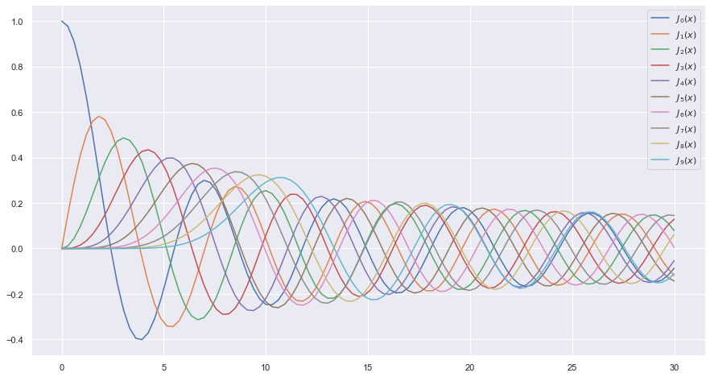
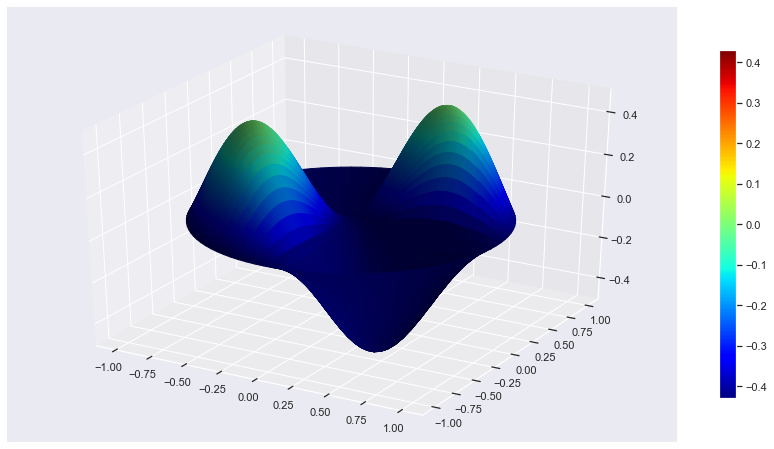
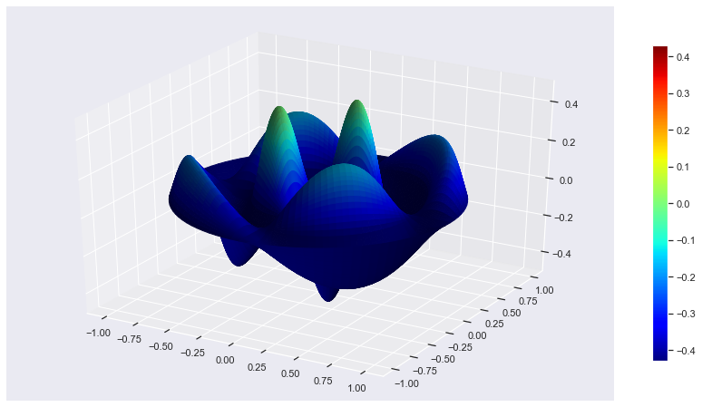

Bessel Functions
- Scipy Library: Source
In this notebook we are going to make some fun with Oscillating membrane implementing Bessel Functions.
import numpy as np from scipy.special import jn, yn, jn_zeros, yn_zeros import scipy as sci import scipy.special as sp
from __future__ import division
import matplotlib.pyplot as plt import matplotlib import pylab from mpl_toolkits.mplot3d import Axes3D from matplotlib import cm, colors %matplotlib inline import seaborn as sns sns.set()
Bessel Functions
n = 0 # order x = 0.0 # Bessel function of first kind print("J_%d(%f) = %f" % (n, x, jn(n, x))) x = 1.0 # Bessel function of second kind print ("Y_%d(%f) = %f" % (n, x, yn(n, x)))
J_0(0.000000) = 1.000000 Y_0(1.000000) = 0.088257
x = np.linspace(0, 30, 100) plt.figure(figsize = (15,8)) for n in range(10): plt.plot(x, jn(n, x), label=r"$J_%d(x)$" % n) plt.legend();

Vibrating Circular Membrane
The vibrations of a thin circular membrane stretched across a rigid circular frame (such as a drum head) can be described as normal modes written in terms of Bessel functions:
\( \large{z(r,θ;t)=AJ_n(kr)\sin(nθ)\cos(kνt)}\)
where $(r,θ)$ describes a position in polar co-ordinates with the origin at the centre of the membrane, t is time and v is a constant depending on the tension and surface density of the drum. The modes are labelled by integers $n=0,1,⋯ $ and $m=1,2,3,⋯$ where k is the mth zero of $J_n$.
The following program produces a plot of the displacement of the membrane in the n=3,m=2 normal mode at time t=0.
| Table | p | q |
|---|---|---|
 |
 |
 |
| --- | --- | --- |
 |
 |
 |
| --- | --- | --- |
|
 |
 |
def displacement(n, m, r, theta): """ Calculate the displacement of the drum membrane at (r, theta; t=0) in the normal mode described by integers n >= 0, 0 < m <= mmax. """ # Pick off the mth zero of Bessel function Jn k = jn_zeros(n, mmax+1)[m] return np.sin(n*theta) * jn(n, r*k)
Oscillating membrane ( SIngle Plot, (2,0))
# Allow calculations up to m = mmax mmax =10 # Positions on the drum surface are specified in polar co-ordinates r = np.linspace(0, 1, 100) theta = np.linspace(0, 2 * np.pi, 100) # Create arrays of cartesian co-ordinates (x, y) ... x = np.array([rr*np.cos(theta) for rr in r]) y = np.array([rr*np.sin(theta) for rr in r]) # ... and vertical displacement (z) for the required normal mode at # time, t = 0
n0, m0 = 2,0 z = np.array([displacement(n0, m0, rr, theta) for rr in r]) plt.figure(figsize = [8,8]) pylab.contour(x, y, z) pylab.show()

Oscilating Membrane ( Single, 3D plot, (2,0))
r, theta = np.mgrid[0:1:100j, 0:2*np.pi:100j] x = r*np.cos(theta) y = r*np.sin(theta) z = displacement(n0, m0, r, theta) N = z/(z.max() -z.min()) fig, ax = plt.subplots(subplot_kw=dict(projection='3d'), figsize=(15,8)) im = ax.plot_surface(x, y, z, rstride=1, cstride=1, facecolors=cm.jet(N)) mm = cm.ScalarMappable(cmap=cm.jet) mm.set_array(R) fig.colorbar(mm, shrink=0.8);

Oscillating Membrane (Multiplot)
plt.figure(figsize = [15,25]) k = 0 for n in range(6): for m in range(n-1): k = k+1 z = np.array([displacement(n, m, rr, theta) for rr in r]) plt.subplot(5,3,k) plt.title(str(n) + str(m)) pylab.contour(x, y, z) pylab.show()

Oscilating Membrane ( m,n = 2,2)
n0,m0 = 2,2 r, theta = np.mgrid[0:1:100j, 0:2*np.pi:100j] x = r*np.cos(theta) y = r*np.sin(theta) z = displacement(n0, m0, r, theta) N = z/(z.max() -z.min()) fig, ax = plt.subplots(subplot_kw=dict(projection='3d'), figsize=(15,8)) im = ax.plot_surface(x, y, z, rstride=1, cstride=1, facecolors=cm.jet(N)) mm = cm.ScalarMappable(cmap=cm.jet) mm.set_array(R) fig.colorbar(mm, shrink=0.8);

References
- https://en.wikipedia.org/wiki/Vibrations_of_a_circular_membrane
- https://www.exoruskoh.me/single-post/2017/05/24/Vibrating-Membranes-and-Fancy-Animations
- https://www.acs.psu.edu/drussell/Demos/MembraneCircle/Circle.html
- http://balbuceosastropy.blogspot.com/2015/06/spherical-harmonics-in-python.html